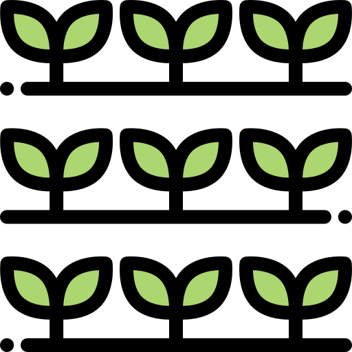

<ion-header>
    <ion-toolbar>
        <ion-title *ngIf="tipo == 'surco'">Registrar Surcos</ion-title>
        <ion-title *ngIf="tipo == 'bancal'">Registrar Bancales</ion-title>
        <ion-title *ngIf="tipo == 'bandeja'">Registar Bandejas</ion-title>
        <ion-buttons slot="start">
            <ion-back-button defaultHref="" (click)="cancelar()"></ion-back-button>
        </ion-buttons>
    </ion-toolbar>
</ion-header>

<ion-content class="background">

    <ion-card class="p-2">
        <form #formulario="ngForm" (ngSubmit)="onSubmit(formulario)">

            <br>

            <div class="text-center">
                
                
                
            </div>


            <ion-item>
                <ion-label position="floating">Numero</ion-label>
                <ion-input min="1" type="number" required name="numero" [(ngModel)]="numero"></ion-input>
            </ion-item>

            <ion-item>
                <ion-label *ngIf="tipo != 'bandeja'" position="floating">Ancho (metros)</ion-label>
                <ion-label *ngIf="tipo == 'bandeja'" position="floating">Numero de Alveolos</ion-label>
                <ion-input min="1" type="number" required name="ancho" [(ngModel)]="ancho"></ion-input>
            </ion-item>

            <ion-item *ngIf="tipo != 'bandeja'">
                <ion-label position="floating">Largo (metros)</ion-label>
                <ion-input min="1" type="number" required name="largo" [(ngModel)]="largo"></ion-input>
            </ion-item>

            <br>

            <ion-row>
                <ion-col size="6">
                    <ion-button *ngIf="tipo != 'bandeja'" [disabled]="!Valid" expand="block" shape="round" type="submit" color="success" size="large">
                        <ion-icon name="checkmark-outline"></ion-icon>
                    </ion-button>
                    <ion-button *ngIf="tipo == 'bandeja'" [disabled]="!BedValid" expand="block" shape="round" type="submit" color="success" size="large">
                        <ion-icon name="checkmark-outline"></ion-icon>
                    </ion-button>
                </ion-col>
                <ion-col size="6">
                    <ion-button (click)="cancelar()" color="danger" expand="block" shape="round" size="large">
                        <ion-icon name="close-outline"></ion-icon>
                    </ion-button>
                </ion-col>
            </ion-row>


        </form>
    </ion-card>

</ion-content>